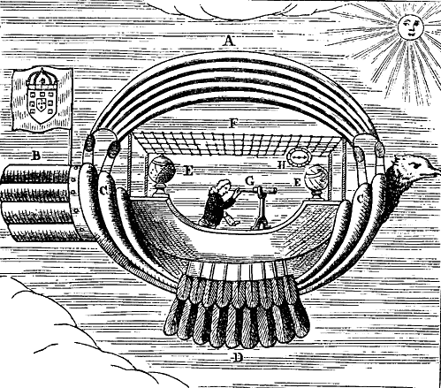

Monday, December the 20th, 2004
back to: title, date or indexes
Here is a fine thing from Chambers' Book Of Days. about which I enthused the other day. Visit the site, go to today's date, and you will find much more text to pore over.

A. Represents the Sails wherewith the Air is to be divided, which turn as they are directed. B. The Stern to govern the Ship, that She may not run at random. C. The Body of the Ship which is formed at both ends Scollopwise; in the concavity of Each is a pair of Bellows, which must be blown when there is no Wind. D. Two Wings which keep the Ship upright. E. The Globes of Heaven and Earth containing in them Attractive Virtues. They are of Metal, and serve for a Cover to two Loadstones, placed in tham upon the Pedestals, to draw the Ship after them, the Body of which is of Thin Iron Plates, covered with Straw Mats, for conveniency of ten or eleven men besides the Artist. F. A cover made of Iron Wire in form of a Net, on which are Fastened a good number of Large Amber Beads, which by a Secret Operation will help to keep the Ship Aloft. And by the Sun's heat the aforesaid Mats that line the Ship will be drawn towards the Amber Beads. G. The Artist who by the help of the Celestial Globe, a Sea Map, and Compass, takes the Height of the Sun, thereby to find out the spot of Land over which they are on the Globe of the Earth. H. The Compass to direct them in their Way. I. The Pulleys and Ropes that serve to hoist or Furl the Sails.